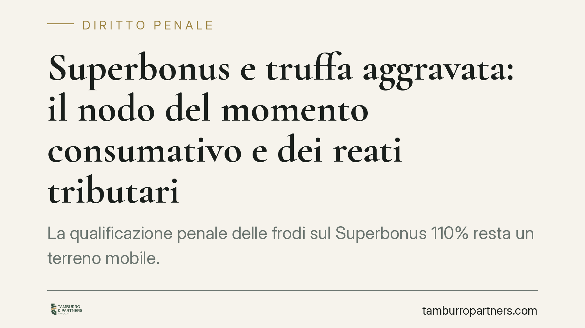

Superbonus e truffa aggravata: il nodo del momento consumativo e dei reati tributari
La qualificazione penale delle frodi sul Superbonus 110% resta un terreno mobile. La giurisprudenza di legittimità si orienta verso la truffa aggravata per erogazioni pubbliche, ma il momento consumativo e il rapporto con i reati tributari restano dibattuti. Per committenti, fornitori e cessionari le implicazioni sono rilevanti, a partire dal rischio di sequestro del credito. Vediamo lo stato dell'arte e le cautele operative.

Il contesto
Le frodi collegate al Superbonus 110% hanno generato un contenzioso penale consistente. Il meccanismo tipico è la creazione di crediti d'imposta fittizi, legati a lavori mai eseguiti o sovrafatturati, poi immessi nel circuito della cessione tramite la Piattaforma dell'Agenzia delle Entrate.
La domanda che occupa la giurisprudenza è duplice: sotto quale fattispecie ricondurre la condotta e in quale momento il reato si consuma. Si tratta di questioni che incidono direttamente sulla competenza, sulla prescrizione e sul perimetro del sequestro.
Inquadramento normativo
L'orientamento prevalente di legittimità tende a qualificare la creazione del credito fittizio come truffa aggravata per il conseguimento di erogazioni pubbliche (art. 640-bis c.p.). La ragione: il credito d'imposta rappresenta un vantaggio economico a carico della finanza pubblica, ottenuto con artifici (asseverazioni e fatture non veritiere).
Va però usata cautela. Non esiste a oggi, allo stato delle fonti consultabili, una pronuncia delle Sezioni Unite verificabile per numero e anno che fissi in modo definitivo sia la qualificazione ex art. 640-bis sia il momento consumativo alla "prima cessione" sulla Piattaforma. Si tratta di un orientamento in via di consolidamento, da verificare alla luce del testo integrale della decisione prima di darlo per acquisito. Chi legge un dato come certo senza il riferimento esatto rischia di scambiare una ricostruzione dottrinale per un principio di diritto vincolante.
Resta inoltre aperto l'inquadramento alternativo: parte della giurisprudenza ha letto condotte analoghe sotto il profilo dell'indebita compensazione (art. 10-quater D.Lgs. 74/2000) o della truffa semplice (art. 640 c.p.).
Il nodo dei reati tributari
È qui il vero punto interpretativo. Quando il credito fittizio viene utilizzato in compensazione tramite modello F24, la condotta può astrattamente integrare l'indebita compensazione ex art. 10-quater D.Lgs. 74/2000.
Si pongono allora due scenari. Il primo è il concorso di reati: la truffa aggravata (momento della creazione/cessione del credito) e l'indebita compensazione (momento dell'utilizzo) tutelano beni e offendono momenti diversi, e possono cumularsi. Il secondo è il rapporto di specialità (art. 15 c.p.), che porterebbe ad applicare la sola norma tributaria quando la condotta si esaurisce nella compensazione.
La soluzione non è neutra: cambia il trattamento sanzionatorio, la soglia di punibilità e i termini di prescrizione. Finché il quadro non si assesta, è prudente ragionare sull'ipotesi più severa.
Implicazioni pratiche
Le conseguenze variano a seconda del ruolo.
- Committente / beneficiario: è esposto quando ha concorso alla costruzione del credito fittizio o ha accettato asseverazioni consapevolmente non veritiere.
- Fornitore: risponde se ha emesso fatture per lavori inesistenti o gonfiati, partecipando all'artificio.
- Cessionario: è il soggetto più delicato. Anche quando acquista in buona fede, può subire il sequestro preventivo del credito (art. 321 c.p.p.). L'orientamento diffuso considera il credito d'imposta un bene autonomo, aggredibile presso chi lo detiene a prescindere dal suo coinvolgimento nel reato originario, salvo il vaglio sulla buona fede e sulla diligenza concretamente adottata.
In breve: il cessionario diligente non è al riparo automatico dal vincolo cautelare, ma la diligenza documentata è il principale argomento difensivo.
Cosa fare in concreto
- Ricostruite la filiera delle asseverazioni: raccogliete visti di conformità, asseverazioni tecniche e documentazione dei lavori, verificandone coerenza e datazione.
- Mappate le cessioni: ricostruite la catena di trasferimento del credito sulla Piattaforma, identificando tutti i passaggi e le controparti.
- Documentate la diligenza del cessionario: conservate ogni verifica svolta prima dell'acquisto (controlli antifrode, due diligence sul cedente, congruità dei prezzi).
- Valutate l'esposizione tributaria: verificate se e come il credito è stato compensato in F24, perché questo incide sul possibile concorso con l'art. 10-quater.
- In caso di sequestro, agite subito: predisponete istanza di riesame nei termini, valorizzando buona fede e diligenza.
Una lettura prudente
La materia è in movimento. Una pronuncia, anche di legittimità, va letta come cornice interpretativa e non come verdetto anticipato sul singolo caso: ogni posizione va valutata sui fatti concreti e sulla documentazione disponibile. Consigliamo di non trarre conclusioni automatiche dalla massima e di verificare sempre il testo integrale della decisione rilevante.
Contributo informativo a cura di Tamburro & Partners - Avv. Giuseppe Tamburro. Non costituisce parere legale.
Ogni condominio ha una storia a sé.
Se gestisci un'amministrazione e vuoi un confronto su una specifica questione condominiale, scrivi allo studio. Ti rispondiamo entro un giorno lavorativo.